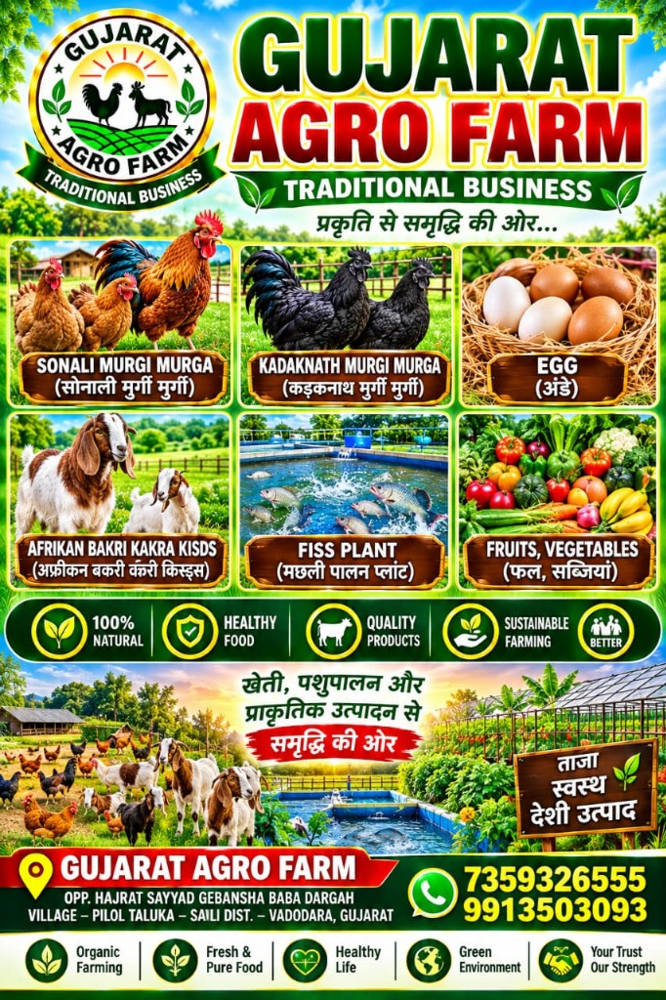

Our Journey: Building Gujarat's Benchmark Agricultural Hub
Gujarat Agro Farm began as a traditional agricultural family enterprise dedicated to pure farming traditions (પ્રાકૃતિક ખેતી). Observing the rapid decline of pure native animal breeds and the excessive reliance on artificial hormones and chemical fertilizers across the country, our founders set out to build an integrated model farm that proves ethical, chemical-free farming is not only possible, but tremendously profitable.
Today, located opposite Hajrat Sayyad Gebansha Baba Dargah in Pilol, Savli, Vadodara, our sprawling multi-acre enterprise operates state-of-the-art climate-controlled brooding facilities, elevated slatted-floor goat houses, freshwater biofloc aquaculture ponds, and organic greenhouse crop fields.